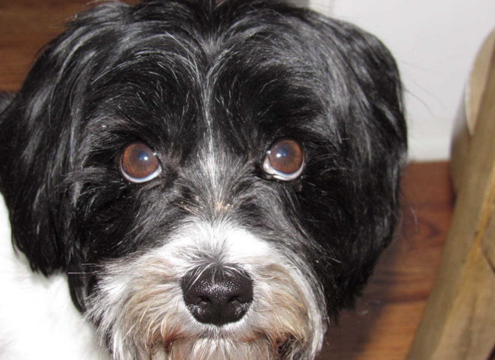
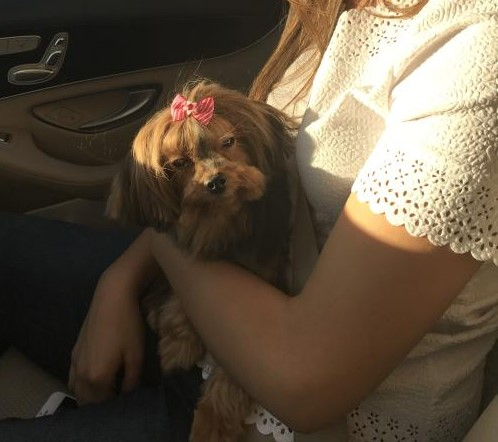

Pets
Finn

Finn is a 7 year old grey cat. I feel like no one really knows cat breeds so I’m just gonna go with grey. He loves doing tricks for treats and his favorite is giving high fives to people. He might as well be a dog as he loves the outdoors and meeting new people. I can only describe him as goofy and chaotic.
Finn’s biggest enemy is his vet. I don't know whether or not it’s because his vet is an MSU alum, but he doesn’t like him. He actually has to be prescribed a sedative before he goes to the vet office because he’ll suddenly act like he was never a house cat for 7 years.
Photo Gallery


Likes
- Belly rubs
- Head Rubs
- Sleeping in cardboard boxes
Daisy

When Daisy isn’t busy slaying all of the evil snakes trying to attack us (Pictured Above), you can usually find her annoying her older sister Marina, getting super hyper at completely random times, or relaxing in our backyard making sure she keeps out all of the intruders (squirrels)
One of Daisy’s favorite things to do is beg to go on a walk, and then once we’re about half way done with the walk she likes to lay down and refuse to keep going. She then loves being carried all the way back from said walk, and the process will repeat again later in the day.
Photo Gallery



Likes
- Shredded Cheese
- Walks around the neighborhood
- Peanut Butter Chex Cereal (specifically peanut butter kind)
Terry

Terry is a playful and spirited dachshund that loves to play fetch with his bone or tennis ball. He loves wandering in forests and finding large sticks to take home. His favorite foods are kibble and peanut butter. Terry will run around frantically when it’s time to eat at home.
My family found Terry at a shelter and decided to adopt it. He was 4 months old and is now 8 years old. Terry knows how to swim, but we don’t tend to go often. Terry got poison ivy once; however, he quickly recovered and has been doing great since
Photo Gallery


Likes
- Fetch
- Eating
- Belly Rubs
- Alex Mitchell and Matthew Inda
Bacon Q Dog

Bacon Q. Dog is a 9yr old labradoodle. He prefers to spend his days lounging among the three different beds/couches that his family has gifted him. He enjoys a walk or two around the neighborhood, as long as he can pretend that he doesn't see any of the other animals to avoid the embarrassment of not wanting to admit he has no wolf-like skills in chasing them.
At night just as the rest of the family is ready to relax, Bacon suddenly wants to release all of his energy. He will place his toys on a mini couch and frantically drag the couch around, giving his toys "a ride." There is also a lot of rolling. Lots and lots of rolling.
Photo Gallery


Likes
- Belly rubs
- Playing tug-of-war
- Sneaking onto the couch
Luna

Luna is a German shepherd mix and a fireball of energy. Often times, destroying anything in her path she will take and hide all your socks, shoes, and clothes for her to chew on. She loves playing catch at the park, it always gives her the zoomies.
Luna is a very jealous, loving, and protective dog. She really embraces her inner chihuahua and will bark at any stranger, car, or noise at night. She makes the perfect guard dog. But she is not at all aggressive. Luna is all bark no bite!
Photo Gallery


Likes
- Chicken
- The park
- Belly rubs
Bear

Bear, the sun-loving canine, is a true beach bum at heart. When the warm rays of the sun grace the sandy shores, you can always find Bear sprawled out, basking in the golden glow. His eyes squint with contentment as he soaks up the sun's warmth, his fluffy coat glistening in the sunlight. Bear's love for sunbathing is unmatched, and he'll stay put until his fur is toasty warm.
However, there's one thing Bear despises more than a cold, rainy day–leashes. The moment his owner attempts to clip on that restraining contraption, Bear's ears droop, and his tail tucks between his legs. He's got a knack for escaping from them, making it a constant struggle for his human to keep him under control during walks. With a mischievous glint in his eyes and a sly smirk, Bear prefers the freedom of the great outdoors, unburdened by a leash.
Photo Gallery


Likes
- smirking
- sun
- belly rubs
Mini

Mini is a 10 year old yorkshire terrier who’s grown up along with me. She enjoys playing and taking baths and is the sweetest dog you could ask for. My mom brought her from a shelter in Ecuador when she was just a couple of months old and even though it was over ten years ago, I remember that day like it was yesterday.
Mini’s quite small, even smaller than the average yorki so she’s quite sensitive physically speaking. However, she still tries to protect our home when she hears a stranger at the door despite her size. Mini loves her family and has a big heart!
Photo Gallery




Likes
- Squeaky Toys
- Baths
- Belly Rubs